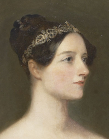
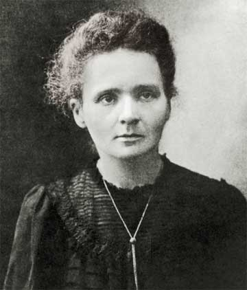

Ada Lovelace (1815-1852)
“The more I study, the more insatiable do I feel my genius for it to be.”
Hailing from London, England, Lovelace is credited as the “first computer programmer” due to her creation of a computing machine algorithm in the mid-19th century. As a child, Lovelace was taught math and science—this was unusual for a girl in the 1800s, but her mother hoped study would drive away the moodiness her father, Poet Lord Byron, was infamous for. Lovelace was raised alone by her mother, as Byron left England when she was only a few months old.
At 17, Lovelace began a mentorship with mathematician and inventor Charles Babbage, called the father of the computer. At one point, she was asked to translate a French article about an invention of Babbage’s into English. She did so, but she also added in her own notes to supplement the material—and ended up tripling its length. In these notes, Lovelace described theories to allow computers to work with letters and symbols instead of just numbers.
The programming language Ada is named for Ada Lovelace.
Marie Curie (1867-1934)
“I never see what has been done; I only see what remains to be done.”
The first woman to win a Nobel Prize, Marie Curie (or Maria Salomea Sklodowska by birth) was a Polish physicist renowned for her work in radioactivity. As a teenager, she worked as a teacher to support her family while also giving free, secret lessons to women workers.
In 1891, she moved to Paris to study, working in the research labs of famous physicists on a cheap diet of bread, butter, and tea. She soon met her husband, Pierre Curie. They married the next year. Marie Curie’s discoveries are numerous: polonium (named for her home country, Poland), radium, the radioactivity present in thorium (independently discovered at the same time as another researcher, Gerhard Carl Schmidt), and the isolation of radium into a metallic liquid are just a few examples.
Curie’s notebooks--and many other possessions--are still so radioactive that they need special protection to handle!
Florence Nightingale (1820-1910)
“I attribute my success to this—I never gave or took any excuse.”
Nightingale, first woman to receive the Order of Merit, was a British nurse and social reformist who highly influenced modern nursing. Born in Florence to a wealthy English family, Nightingale enjoyed a comfortable, travel-heavy childhood. Her father took interest in her schooling as Nightingale was notably intellectual; she particularly excelled in language, mathematics, and philosophy and could read and write French, German, Italian, Greek, and Latin along with her native English.
Nightingale considered nursing to be her calling; however, her family found the pursuit inappropriate. Eventually, she managed to attend trainings at a German nursing institution in 1850 and 1851. Two years later, she used her connections to become the superintendent of a London institution. She is most known, however, for her work during the Crimean War in Scutari, Turkey. She introduced standards of care which ensured soldiers were given adequate care, and later she opened a secular nursing school and worked on many models for nursing statistics and concepts still used today.
Nightingale earned the title “The Lady with the Lamp” due to her habit of wandering the barracks at night to offer support and care to wounded soldiers.
Grace Hopper (1906-1992)
“The most damaging phrase in the language is ‘it’s always been done that way.’”
Born in New York City, Hopper was a mathematician, computer scientist, and rear admiral in the US Navy known for her contributions to technology.
After earning her PhD at Yale, Hopper taught mathematics at her alma mater, Vasser College, for nearly ten years. She joined the Naval Reserve at 37, where she was assigned to work on Mark I, a state-of-the-art (at the time!) large-scale calculator, at Harvard. Over time, Hopper worked on several compilers, including the first English-language compiler that processed data, and eventually helped to develop the first commercial computer.
Hopper coined the term “bug” after a moth caused failures in the circuits of Mark I.
Rosalind Franklin (1920-1958)
“Science and everyday life cannot and should not be separated.”
Born in London on the cusp of the roaring twenties, Franklin is famous for her work clarifying the structure and shape of DNA.
Franklin studied chemistry at the University of Cambridge, but gave up a research opportunity to serve the war effort as WWII approached. Her work took her to Paris after she earned her doctorate, then back to London, where she did the work she is known best for. At King’s College, Franklin discovered the density of DNA and found that its shape was helical--spiral-shaped!
Her work on DNA allowed later researchers to discover that not only is DNA helical, but it is a double-helix: DNA is found in spirals of two, with the strands wrapped around each other.
Malala Yousafzai (1977- Present)
“I tell my story not because it is unique, but because it is the story of many girls.”
At just 15, Malala became a household name after she survived an attack by the Taliban for her activism in Pakistan.
Malala was 10 when the extremist Taliban invaded Swat valley, her home district, and began bombing girls’ schools like the one her father founded and operated. Her family fled, but soon returned--and Malala gave her first speech at 11 years old in Peshawar, Pakistan: “How Dare the Taliban Take Away My Basic Right to Education?” Her speech was spread all throughout Pakistan. That year, the Taliban declared that all girls’ schools in Swat would be shut down by mid-January of 2009.
Soon after, Malala began writing blogs about her life under Taliban rule for the BBC. From January to March, she wrote 35 entries under a fake name while the Taliban blew up over 100 Swat girls’ schools and shut down all of them. She also spoke on a Pakistani current events show and worked with The New York Times to create a documentary about the shutdowns. At 14, she was awarded the first National Youth Peace Prize by Pakistan, which was later renamed the National Malala Peace Prize, and is now the youngest Liberty Medal winner and Nobel Peace Prize winner.
Malala is named for the heroine Malalai (or Malala) of Maiwand, the “Afghan Joan of Arc.”